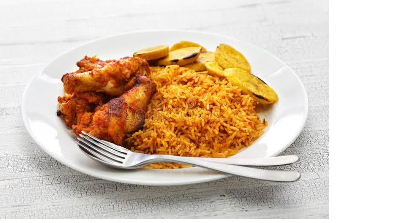

This group includes foods rich in carbohydrate, fats and proteins. Energy is defined in terms of kilo calories and thus one gram of carbohydrate gives 4 kcal, one gram of protein gives 4 kcal, while one gram of fat gives 9 kcal. This group may be broadly divided into two groups:
• Milk, egg, meat and fish: They are rich in protein of high biological value. These proteins have all the essential amino acids in correct proportion for the synthesis of body tissues. • Pulses, oilseeds and nuts: They are rich in protein but may not contain all the essential amino acids required by the human body.
Foods rich in protein, vitamins and minerals have regulatory functions in the body eg. maintaining the heart beat, water balance and body temperature. Protective foods are broadly classified into two groups.